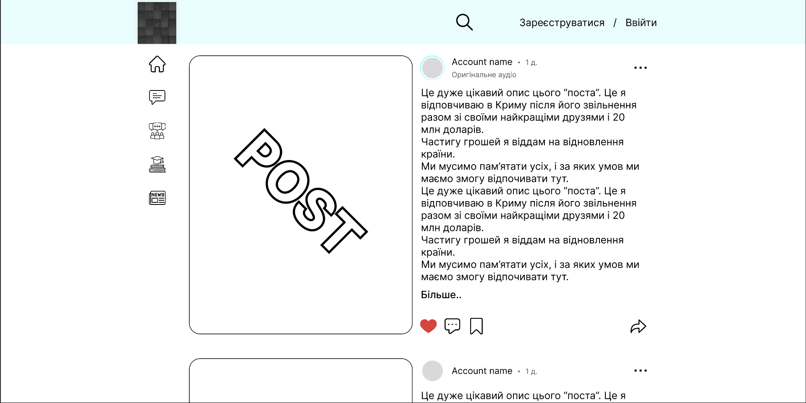

Ех... Сьогодні я як завжди вигрівший. Знову купа почутів які тиснуть з середини. Якщо чесно, то я вже дуже давно думаю про те що в мене не має друзів. Ну дійсно, подумай сама. Кого з вас я бачив в останнє, і як давно. Навіть коли я був вдома в літку, я відчував лише холод, поляна на якій я відчував тепло, перетворилося на кригу, коли до неї підходив відчував холод. Я вже дуже давно не відчуваю того полум'я у серці. Полум'я яке підтримували друзі. Коли я був поряд з Сонею та Валерою, я відчував холод, я не знав на кого я дивлюся, я їх не впізнавав. Все що я відчував коли я на них дивився це був лише холод. І я боюся, що якщо ми колись побачимося, то я відчую від тебе те саме. Коли я думаю про тебе я впадаю в стан, схожий на відчай. Я відчуваю що вже не впізнаю тебе. Ми навіть не спілкувалися по відео дзвінку майже півтора року. Я не знаю що мені робити, а якщо і знаю, то не розумію навіщо. Все одно я все втрачу, або це не вдасться, скільки разів я не пробував, кінцевий результат мене не влаштовував. Це жах. Жах який я некчемний, я навіть плакаюсь тобі. Непевен що таке слово існує, але думаю суть ти зрозуміла. Я кожен день почуваюся самотнім. Тепер я розумію, що мій сон справдився. Він приснився мені в дитинстві, на початку ми були всі там, я маю на увазі не тільки Тебе Мене Соню і Валеру, я маю на увазі усіх. А в кінці, я залишився один. Я сховався на якомусь складі, і сидів за якоюсь коробкою. Я сподівався що мене не знайде те, що забрало в мене вас. Мабуть це була самотність, чи щось накштал того. Я вже забув заради чого прокидаюся, заради чого навчаюся, заради чого в цілому живу. Я просто пливу за течією, я втратив вогонь, що яро бурлив в моєму серці.
Дивись на дати, починай читати знизу
Остані думки/новини
Привіт, сьогодні побачив в магазиці сир камамбер, не стримався і купив. На смак прикольний, але солений жах, мабуть він додається в якісь страви (салати). Якщо не куштувала, то раджу спробувати.
Привіт, сьогодні я дещо помітив, дещо незвичне. Коли я був дома (в Україні), мені було самотньо, я відчував що щось не те. Я думав що коли я повернуся додому, щось змінеться. Але здається мені байдуже де я. Ну тобто де б я не був, я буду відчувати себе не добре. Можливо це через те, що зараз, поряд не має тебе. Це лише здогадка, і дізнатися напевне я не зможу, до тих пір, поки не побачу тебе. Скоріш за все я просто дурень. Ну й не хай.
Привіт, сьогодні вже другий день як ти знову мені снишся. Сподіваюся в тебе все гаразд. Знаєш, колись давно я слухав серце, я робив те що любив, але зараз я перестав його слухати, причина в тому що я чую лише крик. Я такий некчемний. Я досі вірю в те що ми колись ще побачимося. Вчора був сон, я його вже дуже погано пам'ятаю, але в кінці, ти була дуже близько, ми спілкувалися, в якийсь момент я повернув обличчя в бік (можливо відвів погляд) і ти підсунулась до мене, і твій ніс був в декількох сантиметрах від моєї щоки. Наче дурниця, але тобі стало так тепло. А сьогодні мені приснилося що ми кудись їхали автобусом, і ми сиділи поруч (2 сидіння поруч) у тебе був з собою ноутбук (цікаво, він в тебе є?) і я роздав мобільний, і ми збиралися подивитися щось в ют.
Вчора я побачив що ти оновила аватарку в вайбері, і я побачив сережку. Одразу стало так ревнево. Погано бути мною. (опа, ще один факт про мене, я ревнивий. А ми навіть не пара. Мабуть я дійсно некчема.)
Привіт. Сподіваюся в тебе все добре. Сьогодні я вирішив підбити підсумки. Раніше я щодня просив повернути мене додому. Та зараз я бачу які свиноти там, і вже не щось не хочеться. Я хотів піти служити. Захищати Україну від російської навали. Але з'ясувалося що впершу чергу треба захищати від наших політиків та ТЦК. Вони щодня знишують українську свободу. Зараз це не та вільна країна яку я пам'ятаю. Таке відчуття ніби я зараз лечу в якомусь проваллі і не розумію де Я, і що мені робити. Мрії, які я хотів здійснити. Залишаються мріями. Як би я хотів мати світ, де нікого не має. Тільки я один йду по спустошиному місту і жодної людини. Може хоч там я б зустрів спокій.
Ех.. Ти бачила що коється в тилу в Україні? Політики та й звичайні люди починають гризти один одного. Від цього дуже сумно. Наші захисники віддають свої життя, поки ті хто мають допомагати нашим захисникам, гризуть один одного. Моя мрія змінити Україну, стає ще далі і далі.
Ох, щось я давно не писав сюди. Схоже я втратив віру. Мені просто не було що сюди написати. Буду відвертим. Я трішки випив.. на голодний шлунок. Тому можливо я не буду розуміти що пишу. Але я знаю що зараз я відвертий та чесний. Я тебе кохаю, і це не зміниться, крапка. Я намагався втілити проект на якому клеймо "провал". Це задля двох цілей, перша, це ти. Ігша, це об'єднати український народ. Якщо чесно я сумую за дитинством не тільки тому що я сумую за тим як ми проводили час, а ще й за тим що в моїй голові було тихо. Я вже забув що таке тиша. Я постійно про щось думаю. І доходжу до певних висновків. Здоровий глузд мені каже що мій проект провальний. Хоча б тому що я працюю над ним сам. Я б хотів щоб ти стала його частиною. Не важливо що ти не знаєш програмування. Мені потрібна людина яка мене буде підтримувати. Людина що буде вірити в мене не залежно від мого безумства! Мені потрібна жінка. За усіма великими людьми стоїть жінка. Взяти хоч Зеленського. Я певен в тому що його завжди підтримує жінка не залежно від проблеми. Я хочу вірити що в мене, ця жінка, це ти! Не важливо кого я зустріну в житті, я буду закривати очі, ніби інших жінок не існує. Я хочу бути з тобою поряд, не важливо від ролі. Хоч хлопця, хоч друга, чи щось накштал брата, це не важливо. Важливо лише те що ти поряд. І я не перестану вірити в це. Я вірю що колись ти будеш моєю дівчиною, а може й дружиною. Це не жарт. Завтра, тобто сьогодні, може я пожалкую. Але це вже не важливо. Я багато про що мріяв, і багато що здійснилося. Але зараз всі мої минулі бажання не важливі, для мене зараз важлива тільки ТИ. Най гірше те, що я розумію що все б було простіше якщо б в мене були гроші, багато грошей. Але в мене їх не має. Мабуть тому я й роблю цей проект. Але також я його роблю для України. Я ніколи не перестану любити мову та культуру України. Зараз я розумію що я багато не знаю про неї. І я хочу дізнатися більше про її культуру. Я не збираюся міняти твою думку, і твоє бажання повернутися в Україну. Колись ти це сама захочеш. І я буду чекати цього. Але підбивати під це я не буду. Я хочу щоб ти повністю знайшла себе (спойлер: люди шукають себе протягом усього життя). Здається в мене довгий шлях... А я хотів піти з життя після 30-40. От же ш ця війна.
Знаєш, я б хотів би додати тебе до свого проекту, думаю ти б могла принести багато чого цікавого та нового до сайту. Але проблема в тім що це займає багато часу, а з твоїх слів в тебе мало вільного часу. Нажаль. А булоб класно якщо б ми співпрацювали. На додаток не факт що "Проект" вигорить та буде успішним. В сучасності це дуже важко втілити у реальність.
Однак якщо б ти захотіла і в тебе був би час. Я був би радий побачити тебе у своїй команді.
Я зібрався з силами, так би мовити взяв яйця в кулак. Так до чого це я. Я почав далі робити дизайн. Головне не пригадувати що мені це все потім ще кодити, жах, хах... Я хочу показати тобі маленький шматочек своєї роботи. Це все ще буде дороблятися, але я хочу показати хоч щось, тому ось... А і вибач, але показати лого не можу)
Я ще нікому не казав, але я збираюся піти до лав ЗСУ після закінчення навчання в коледжі. Я про це думаю ще з 24 лютого 2022 року. Не знаю навіщо. Але відчуваю що це мені потрібно. Може хоч там почну поважати своє життя, а якщо ні, то там такі і треба як я, люди які зможуть чітко виконувати свої завдання. Мені байдуже куди мене направлять, чи то я буду в тилу, чи то на нулі.
Останні дні я щось дуже сильно пригальмував. Натхенення ніби пішло від мене. Не навиджу коли це відбувається. Не навиджу заходити у тупик. В мене знов почалася затяжна дипресія. Дуже багато думок залазять в глубини мого мозку. Думка про те що я тебе не зможу побачити мене засмучує. Я людина яке часто живе минулим. Я часто його пригадую. Я просто не хочу повторювати свої помилки. А щоб їх не повторити, треба про них пам'ятати. Одною з моїх помилок, це було закохатися. Мені часто бачу сноведіння з твоєю присутністю. Там було так весело. Коли я прокидаюсь, я отримую не надовго відчуття спокою і тепла. Зараз я розумію як було добре в 21 році. Тоді в мене не було раз за разом цьої дипресії. Коли почалася війна я думав що це не надовго. Що до літа все стихне і ми знову побачимся. Що ближче було літо, тим більше я не вірив у те що ми не побачимося. До поки воно не настало. Жахливо бути дитиною. Мріяти та думати про те що ніколи не здійсниться.
Це ЖАХ!!! Я нарешті зробив схему 2АБ (дво лінійне авто блокування), а тепер треба зробити 4АБ (чотирьох лінійне авто блокування), Я все більше хочу покататися на "гойдалці". Тільки думка про тебе і мою ціль на майбутнє не дає мені цього зробити...
До речі, якщо тобі буде цікаво, то можеш скачати і подивитися на що я витратив 6 годин свого часу...
Скачати11:30 AM
Сьогодні пішов перший сніг. Був дуже крупним. В ладошку приблизно.
А тепер звітую. В п'ятницю та суботу розробка "проекта" загальмувалася. А сьогодні за графіком я маю закінчити розробку сторінки "Mess", а мені ще схему треба зробити (5-7 годин). І як мені це все встигнути... . Шкода що я не робот.
Ех... Ну що можу сказати. Це пздц. Сьогодні накинули стільки роботи, яку я б рік робив. А її треба зробити до понеділка. Тому певно сьогодні візьму перерву в розробці "Проекта" або буду робити десь з 10 по годину ночі. Бо дедлайн 12.12 і треба якось все це встигнути. Сподіваюся в тебе не такий завал. Все обняв поцілував. До зустрічі!
Сьогодні я зробив не мало роботи для втілення свого проекту. І щоразу бачу скільки мені ще йти до моєї мети. Думка про те скільки ми ще не побачимся, або зовсім не побачимся вбиває мене, але в той же час мотевує. Я банально не можу дозволети собі здатися. Якщо здамся, то я програю. А в цій жахливій грі програвати не можна. Я б так хотів поїхати до тебе, хоча б на тиждень. Просто все кинути і прямо зараз поїхати. Це нічого б не змінило, але я б хоч тебе побачив, а це вже не погано. Але мені не дозволяє вік та фінанси. Тому я мушу дати право на життя своєму проекту. Якщо він спрацює, то я зможу перекрити свої деякі проблеми.
Сподіваюся я встигну...
Я часто пригадую сон. Два сни. В першому сні, який мені приснився коли я був чи то в початковій шволі, чи то ще в дит садку. Мені приснилося як ми всі Ти Я Соня Валера Даша Ігор Ігорь Єва та інші. Всі ми були разом. Ми проходили перешкоду за перешкодою. Але після якогось моменту нас почало ставати все менше. В кінці я залишився один. І зараз я бачу що ви всі стаєте все далі і далі від мене. Іронічно. Я не можу допустити щоб цей сон справдився!
А в другому сні. Ти я Соня та Валера їхали в недешевих костюмах. Салон виглядав як в лімузині. Цей сон мені більш до душі. Розумієш? Тому я мушу зробити все що в моїх силах.
Вчора я почав активно робити "проект". І сьогодні я бачу гарні результати. Але думка про те скільки потім там ще кодити. Це жах ахха. Але воно того варте. Я зроблю так щоб воно було того вартим. Я вірю в те, що мій проект допоможе у розвитку України в багатьох напрямках.
Хах, а казав що буду рідко тут писать, а виходить що кожен день. Але думаю так буде не довго.
Знаєш. Я б дійсно міг змінити Україну. Зробити її кращою. Але найкращій спосіб це зробити це стати презедентом. Але тут є проблема. За конституцією України. Президентом може стати громодянин України якому виповнилося 35 років. Не говорячи про заставу. Навіть якщо я зможу змінити Україну. В тебе буде вже сім'я. Все що я зроблю це буде дарма. Тому це буде скоріш щоб зайняти пустоту в себе в душі. Знаєш що найдурніше, ми такі різні, але я все одно зміг в тебе закохатися, який же я дебіл. Я знаю фізику. Раніше я добре її вчив. І знаю що різно імені полярності притягуються. Але все одно... Треба було тобі розказати все ще в 20 році, але я сцикло яке не може визнати свої почуття. Я це пишу і пригадуючи весь той час разом. Навіть якщо я втрачу пам'ять, я в все одно буде це все пам'ятати, тільки не буду розуміти що саме. Тупо звучить. Але я думаю ти зрозуміла. Давай повернемося до президенства. Я б не зміг ним стати хоча б тому, що, незалежно від того які я маю мотивацію чи амбіції. Без твоєї допомоги я не зможу досягти цього. Хоча є ще один спосіб як змінити Україну. Я повинен стати най успішнішим підприємцем України. Я маю сильно впливати на країну. Щоб щось там змінити. В мене є ідея як це зробити. Я вже почав "проект" але мені не вистачає ні навичок, ні натхнення. Я мушу стати підприємцем, за найкоротший термін. В ідеалі це до мого двадцятиріччя. В мене є друг, найкращій друг, який завжди мене підтримає, якою б це не була божевільна ідея. Я вірю в те що разом з Валерою. Я зможу досягти успіху. І я зроблю все що в моїх силах. Я вже прочитав, відвідав курсів більше ніж за останні 10 років. І прочитаю ще більше. Я не можу так легко відпустити свою мрію. Хоч би тіки встигнути.
Пам'ятаєш я тобі казав що ти друга дівчина яку я покохав? Я думаю для тебе не буде новина, що перша дівчина яку я покохав це була Соня? В мене в дитинстві було бажання, я завжди думав про суіцид. Навіть зараз я про це думаю. Днем за днем. Але думки про тебе і Соню не давали мені це зробити. Ти не подумай, я не піду себе вбивати. Якщо я покінчу з собою, то це буде означатиме що я здався. Але для мене це буде надто низько. Не знаю чому я вирішив з тобою про це поділитися. Просто захотілося написати. Я досі думаю що колись в мене з'явиться шанц. Хоч 1 маленький шанц. Зараз я думаю про те як зробити Україну, країною в якій ти будеш бажати жити. О це я розумію відчай. Навіть не можу правду прийняти. Але я зроблю так, що всім буде подобатися Україна. Я обіцяю що зроблю Україну, країною в якій приємно жити. В мене є певні думки як це зробити. І з понеділка я почну готуватися до початку втілення свого плану. (Хоча я досі не розумію чим тобі так подобається англійська мова. Але це твоя справа. Я завжди вважав українську най милозвучнішою. Думаю кожному подобається своє. А бо я просто виріс дурним патріотом своєї країни. Як же важко і огидно жити в цьому світі.)
Що ж, новина про те що я тобі як брат мене дуже порадувала. Я нікому не казав, але я завжди в дитинстві хотів собі сестру. Дивно що я це згадав тільки зараз. Виходить що ти мені нагадала, і в якомусь сенсі здійснила мою мрію. Дякую.
Що до нещодавніх подій, мене нарешті перевели на бюджет. Тепер зможу вийти на стипендію. Хоча навряд мені це вдасться. Дуже сильна конкуренція. Я змагаюся з тим, в кого одні п'ятірки. А як вийти на стипендію якщо 5 це максимальний бал. Комедія якась.
В мене були думки, що до того, чи може видалити цей сайт? Але раптом ти колись сюди зайдеш. Просто бо тобі буде нудно. І посмієшся з мене. А бо якщо тобі стане цікаво що в моєму житті відбувається. Це така собі "одно стороння бесіда".
Коли ми з тобою обговорили усе що є між нами, коли ти сказала що я тобі ніби брат. Мені це сподобалося. Але і водночас, хіба я можу бути тобі як брат після того що зробив? Не знаю чи ти пам'ятаєш про то, але постійно себе картаю. Я не знаю як ти себе відчувала після цього. Я про події на ЗБ. Але знаю що якщо я б повернувся в минуле. Я б нічого не змінював. Хотів би поговорити з тобою про це десь в 20-21 роках. Але якось не наважавувався.
Я розроблюю інший сайт. Більш зручний за цей. Не знаю навіщо. Просто хочу.
Ти наголосила на тому що не приїдеш в Україну. І мені стало сумно. Я почав розуміти що в мене взагалі не має жодного шанцу.
Після чого, я створив "особливу" папку. Яку назвав "МИНУВШЕ" В ній фото з твоєю присутністю. (не подумай нічого дивного). Я думаю що буде краще якщо я буду рідше про тебе думати. Не сказати що часто бачив ті фото, але не хочу випадково їх побачити, а потім сумувати і пригадувати минуле.
Мені от цікаво стало, а ти б хотіла побачити тут якісь мої фото?
Така цікава новина. В мене народилася племіниця. І її звати так само як і тебе xD Всесвіт ніби спеціально це все робить, щоб я ніколи тебе не забув.
Основне
Привіт Саша, я що дня про тебе думаю. Але я не знаю як почати з тобою діалог. Я хочу дізнатися як в тебе справи. Як ти себе почуваєш. Хочу дізнатися що в тебе і як в житті. Але я боюсь що ти не будеш відповідати на мої повідомлення. (протягом тривалого часу) Я боюсь що наш діалог, він закінчиться на словах.. наприклад: "як справи?".
Знаєш що найдурніше. Я багато думав чи варто тобі говорити про свої почуття. Я не очікував взаємності чи чогось такого. Я просто не зміг це тримати в собі. Я розумів і розумію що ми не зможемо бути разом. На те є багато факторів. Я пам'ятаю як ти сказала на моєму дн, що можливо залишишся жити в Франції, якщо тобі там сподобається. І я розумів що скоріш за все так і буде. Мені подобається Франція, але не на стільки щоб там жити. Коли я повернувся в Україну. На той 1 нещасний місяць. Я зрозумів що там важко жити. Дійсно. Але все одно щодня прошу батьків повернути мене туди. Я не уявляю тут, у Польщі, свого життя. Або в якійсь іншій країні. Але і серце розривається. Що дня думаю про тебе. І тільки поринувши у відео ігри я можу відволіктися.
Колись я запропонував одній дівчині зустрічатися. Най дурніше те, що для мене слова люблю і зустрічатися були синонімами. Я думав що говорячи "давай зустрічатися" це те саме що сказати люблю. Після чого вона мене 2 роки ігнорила. І чесно кажучи я досі не можу розлюбити, не її. Не тебе. Я заплутався у своїх почуттях. Я що дня думаю про це, і все одно не можу знайти рішення. Думаю я більше не зможу ще комусь зізнатися у своїх почуттях. Не хочу проходити через це все зров.
Я бачу як лине час, і це жахливо. День за днем проходить. Ти змінюєшся, я змінююся. І нічого не можу з цим зробити. Я б хотів хоча б бачити як ти змінюєшся, тому чекав рік щоб ти приїхала. Але почалася війна. І вже 2 роки як ми не бачилися. Ти можеш собі це уявити? 2 роки. Здавалося це так мало, але дивлючись на твої фото, які ти викладаєш в сторіс. Я розумію що ти вже не та Саша яку я пам'ятаю. І від цього боляче. Я боюся побачити тебе нову, мабуть це смішно.
Що ж, думаю я мав раніше прийняти факт що життя важке та не справедливе. Шкода що не хотів визнавати цього раніше.
Я старався написати усе що хотів, усе що я думаю день за днем. Але навряд це все можна передати текстом. Не думаю що я тобі колись відправлю цей текст, але хто знає. Скажу лише на останок, Саша, я кохаю тебе! І ніколи вже не зможу розлюбити. Це жахливо.
Я буду рідко, але буду сюди щось писати, можливо буду якісь фото викладати. (хоча навряд, не люблю фотографуватися :) )
Мабуть я б ще хотів додати, що, пиши мені хоч інколи. Як друзі. Мені завжди подобалося з тобою спілкуватися та переписуватися.
Я дуже багато разів вчіняв з тобою погано. І постійно згадую про це. Я не все згадати можу, але деякі речі я пам'ятаю як вчора. І пам'ятаю що хоч і не показував цього, але відчував великий тягар. Вибач якщо зможеш. Я був дурнем.